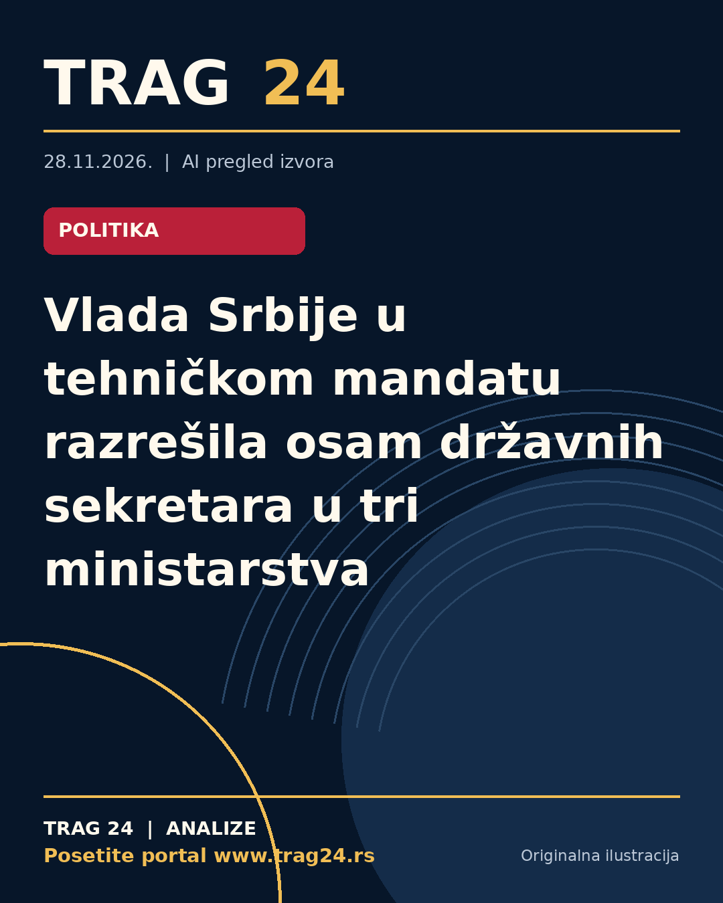

Vlada Srbije u tehničkom mandatu razrešila osam državnih sekretara u tri ministarstva

ŠTA SE DOGODILO
Vlada Srbije u tehničkom mandatu donela je odluku o razrešenju osam državnih sekretara u Ministarstvu privrede, Ministarstvu kulture i Ministarstvu informisanja i telekomunikacija. Takođe su izdata rešenja o razrešenju v. d. zamenice direktora i pomoćnika direktora Kancelarije za javnu i kulturnu diplomatiju, kao i novoimenovanjima vršilaca dužnosti pomoćnika ministara u nekoliko drugih ministarstava.
HRONOLOGIJA
25. novembra Siniša Mali preuzeo je ovlašćenja ministra privrede nakon što je ministarka Adrijana Mesarović podnela ostavku zbog izbora u Narodnu skupštinu. Dan ranije, 24. novembra Skupština Srbije je konstatovala ostavke ministara Nikole Selakovića i Adrijane Mesarović pošto su izabrani za narodne poslanike. Tim povodom, Nenad Vujić preuzeo je ovlašćenja ministra kulture. Nakon toga su donete odluke o razrešenju državnih sekretara 28. novembra, što je objavljeno u Službenom glasniku.
ŠTA NAVODE IZVORI
Iz dostupnih izvora (Kurir, B92 i Insajder) precizno su navedena imena razrešenih državnih sekretara: u Ministarstvu privrede Andrea Horvat Kiralj, Andrijana Jovanović, Darko Mitrović i Vladimir Arsenović; u Ministarstvu kulture Lav Grigorije Pajkić, Dejan Antić i Miomir Đorđević; te Slaviša Antić u Ministarstvu informisanja i telekomunikacija, koji je dao ostavku. Takođe, navedeno je da su razrešene i funkcije unutar Kancelarije za javnu i kulturnu diplomatiju na lični zahtev. Trojica pomoćnika ministara dobila su novi tromesečni status v. d. sa početkom u decembru.
ŠTA JE POTVRĐENO
Potvrđeno je iz zvaničnih dokumenata Vlade i Službenog glasnika da su razrešeni svi navedeni državni sekretari i funkcioneri na lični zahtev ili kao posledica promene funkcija u izvršnoj vlasti usled izbora za narodne poslanike. Takođe je potvrđeno da Siniša Mali i Nenad Vujić vrše poslove ministara privrede, odnosno kulture, do izbora novih ministara.
ŠTA NIJE POTVRĐENO
Nema potvrda o razlozima razrešenja izuzev ostavki podnetih na sopstveni zahtev kod pojedinih funkcionera. Nije potvrđeno ko će novo biti imenovan na mesto razrešenih državnih sekretara niti kada će biti vršena nova imenovanja ministara u ovim resorima. Takođe, nema detalja o sadržaju i obimu mandata trojice pomoćnika ministara sa novim v. d. statusom.
ŠTA OSTАJE OTVORENO: Ostaje nepoznato buduće personalno rešenje u tri ministarstva nakon razrešenja državnih sekretara, kao i dalji rokovi za imenovanja novih ministara. Takođe nije jasno kako će se ovi personalni pomaci odraziti na zakonodavni rad i funkcionisanje ministarstava u tehničkom mandatu. Ostaje otvoreno pitanje o planovima vlade za dalje kadrovske promene u drugim resorima koji nisu pomenuti.
Izvori
- https://www.kurir.rs/vesti/politika/10175214/razreseno-osam-drzavnih-sekretara-u-tri-ministarstva
- https://www.b92.net/info/politika/288793/vlada-srbije-u-tehnickom-mandatu-donela-odluku-razreseno-osam-drzavnih-sekretara-u-tri-ministarstva/vest
- https://insajder.net/prenosimo/vlada-srbije-u-tehnickom-mandatu-razresila-osam-drzavnih-sekretara
Ova analiza je pripremljena uz pomoć veštačke inteligencije na osnovu javno dostupnih izvora. Navodi izvora nisu nužno nezavisno potvrđeni.